Last updated: 2023-03-30
Checks: 7 0
Knit directory: emlr_obs_preprocessing/
This reproducible R Markdown analysis was created with workflowr (version 1.7.0). The Checks tab describes the reproducibility checks that were applied when the results were created. The Past versions tab lists the development history.
Great! Since the R Markdown file has been committed to the Git repository, you know the exact version of the code that produced these results.
Great job! The global environment was empty. Objects defined in the global environment can affect the analysis in your R Markdown file in unknown ways. For reproduciblity it’s best to always run the code in an empty environment.
The command set.seed(20200707) was run prior to running
the code in the R Markdown file. Setting a seed ensures that any results
that rely on randomness, e.g. subsampling or permutations, are
reproducible.
Great job! Recording the operating system, R version, and package versions is critical for reproducibility.
Nice! There were no cached chunks for this analysis, so you can be confident that you successfully produced the results during this run.
Great job! Using relative paths to the files within your workflowr project makes it easier to run your code on other machines.
Great! You are using Git for version control. Tracking code development and connecting the code version to the results is critical for reproducibility.
The results in this page were generated with repository version 9e63b4b. See the Past versions tab to see a history of the changes made to the R Markdown and HTML files.
Note that you need to be careful to ensure that all relevant files for
the analysis have been committed to Git prior to generating the results
(you can use wflow_publish or
wflow_git_commit). workflowr only checks the R Markdown
file, but you know if there are other scripts or data files that it
depends on. Below is the status of the Git repository when the results
were generated:
Ignored files:
Ignored: .Rhistory
Ignored: .Rproj.user/
Ignored: analysis/figure/
Ignored: data/
Ignored: output/
Untracked files:
Untracked: code/read_GLODAPv2_2022.Rmd
Unstaged changes:
Modified: code/Workflowr_project_managment.R
Note that any generated files, e.g. HTML, png, CSS, etc., are not included in this status report because it is ok for generated content to have uncommitted changes.
These are the previous versions of the repository in which changes were
made to the R Markdown (analysis/read_regions.Rmd) and HTML
(docs/read_regions.html) files. If you’ve configured a
remote Git repository (see ?wflow_git_remote), click on the
hyperlinks in the table below to view the files as they were in that
past version.
| File | Version | Author | Date | Message |
|---|---|---|---|---|
| Rmd | 9e63b4b | jens-daniel-mueller | 2023-03-30 | created global section map |
| html | 26838f8 | jens-daniel-mueller | 2022-10-24 | Build site. |
| Rmd | 032edc2 | jens-daniel-mueller | 2022-10-24 | prepare basin mask w/o Sea of Japan |
| html | af8acb2 | jens-daniel-mueller | 2022-10-23 | Build site. |
| html | 30f15f1 | jens-daniel-mueller | 2022-10-23 | Build site. |
| Rmd | 3d1ccb8 | jens-daniel-mueller | 2022-10-23 | included Sea of Japan |
| html | 1c60d4c | jens-daniel-mueller | 2022-08-26 | Build site. |
| Rmd | 5d6a507 | jens-daniel-mueller | 2022-08-26 | implented global section with region filter |
| html | e949567 | jens-daniel-mueller | 2022-04-13 | Build site. |
| html | aea9afe | jens-daniel-mueller | 2022-04-07 | Build site. |
| html | 9451c4b | jens-daniel-mueller | 2022-04-06 | Build site. |
| Rmd | 5d7b7c9 | jens-daniel-mueller | 2022-04-06 | rerun all with lat max 65N |
| html | 7e94d73 | jens-daniel-mueller | 2022-04-06 | Build site. |
| Rmd | 8d52a4b | jens-daniel-mueller | 2022-04-06 | rerun all with lat max 65N |
| html | f088f55 | jens-daniel-mueller | 2022-04-01 | Build site. |
| Rmd | d23e425 | jens-daniel-mueller | 2022-04-01 | rerun all including arctic and North Atlantic biome |
| html | dde77eb | jens-daniel-mueller | 2022-04-01 | Build site. |
| Rmd | a1ea47d | jens-daniel-mueller | 2022-04-01 | rerun all including arctic and North Atlantic biome |
region_masks_all <-
read_ncdf(paste(path_reccap2, "RECCAP2_region_masks_all_v20210412.nc", sep = "")) %>%
as_tibble()
# region_masks_all_seamask <- region_masks_all %>%
# select(lat, lon, seamask)
region_masks_all <- region_masks_all %>%
select(-seamask)
region_masks_all <- region_masks_all %>%
mutate(arctic = if_else(arctic != 0 & atlantic != 0, 0, arctic),
southern = if_else(southern != 0 & atlantic != 0, 0, southern),
southern = if_else(southern != 0 & pacific != 0, 0, southern),
southern = if_else(southern != 0 & indian != 0, 0, southern))
region_masks_all <- region_masks_all %>%
pivot_longer(open_ocean:southern,
names_to = "region",
values_to = "value") %>%
mutate(value = as.factor(value)) %>%
mutate(lon = if_else(lon < 20, lon + 360, lon))
region_masks_all %>%
filter(value != 0,
region != "open_ocean") %>%
ggplot(aes(lon, lat, fill = region)) +
geom_raster() +
scale_fill_brewer(palette = "Dark2") +
coord_quickmap(expand = 0)
reccap2_region_mask <- region_masks_all %>%
filter(value != 0,
region != "open_ocean") %>%
select(lon, lat, region)
rm(region_masks_all)The land sea mask with 1x1° resolution from the file
landsea_01.msk was used.
landsea_01 <- read_csv(
paste(
path_woa2018,
"masks/landsea_01.msk",
sep = ""),
skip = 1,
col_types = list(.default = "d"))According to the WOA18 documentation document:
“The landsea_XX.msk contains the standard depth level number at which the bottom of the ocean is first encountered at each quarter-degree or one-degree square for the entire world. Land will have a value of 1, corresponding to the surface.”
The landmask was derived as coordinates with value 1.
landmask <- landsea_01 %>%
mutate(region = if_else(Bottom_Standard_Level == "1",
"land", "ocean")) %>%
select(-Bottom_Standard_Level)
landmask <- landmask %>%
rename(lat = Latitude,
lon = Longitude) %>%
mutate(lon = if_else(lon < 20, lon + 360, lon)) %>%
filter(lat >= params_global$lat_min,
lat <= params_global$lat_max
)
landseamask <- landmask
landmask <- landmask %>%
filter(region == "land") %>%
select(-region)
rm(landsea_01)The surface mask (0m) with 1x1° resolution from the file
basinmask_01.msk was used.
basinmask_01 <- read_csv(
paste(
path_woa2018,
"masks/basinmask_01.msk",
sep = ""),
skip = 1,
col_types = list(.default = "d"))
basinmask_01 <- basinmask_01 %>%
select(Latitude:Basin_0m) %>%
mutate(Basin_0m = as.factor(Basin_0m)) %>%
rename(lat = Latitude, lon = Longitude)According to WOA FAQ website and WOA18 documentation, number codes in the mask files were used to assign ocean basins as follows:
Atlantic Ocean:
Indian Ocean:
Pacific Ocean:
# assign basin labels
basinmask_01 <- basinmask_01 %>%
filter(Basin_0m %in% c("1", "2", "3", "10", "11", "12", "56")) %>%
mutate(
basin_AIP = "none",
basin_AIP = case_when(
Basin_0m == "1" ~ "Atlantic",
Basin_0m == "10" & lon >= -63 & lon < 20 ~ "Atlantic",
Basin_0m == "11" ~ "Atlantic",
Basin_0m == "3" ~ "Indian",
Basin_0m == "56" ~ "Indian",
Basin_0m == "10" & lon >= 20 & lon < 147 ~ "Indian",
Basin_0m == "2" ~ "Pacific",
Basin_0m == "12" ~ "Pacific",
Basin_0m == "10" &
lon >= 147 | lon < -63 ~ "Pacific"
)
)
# apply northern latitude boundary
basinmask_01 <- basinmask_01 %>%
filter(lat <= params_global$lat_max)
# harmonize lon scale
basinmask_01 <- basinmask_01 %>%
mutate(lon = if_else(lon < 20, lon + 360, lon))
# prepare basin mask excluding Sea of Japa
basinmask_01_excl_Japan <- basinmask_01 %>%
filter(Basin_0m != "12")
basinmask_01_excl_Japan <- basinmask_01_excl_Japan %>%
select(-Basin_0m)
basinmask_01 <- basinmask_01 %>%
select(-Basin_0m)basinmask_01 <- inner_join(basinmask_01,reccap2_region_mask)
basinmask_01 <- basinmask_01 %>%
mutate(basin_AIP = if_else(region == "arctic", "Arctic", basin_AIP))# generate base map, which is further used throughout the project
map <-
ggplot() +
geom_tile(data = landmask,
aes(lon, lat), fill = "grey80") +
coord_quickmap(expand = 0) +
theme(axis.title = element_blank())
# plot basin_AIP map
map +
geom_raster(data = basinmask_01,
aes(lon, lat, fill = basin_AIP)) +
scale_fill_brewer(palette = "Dark2")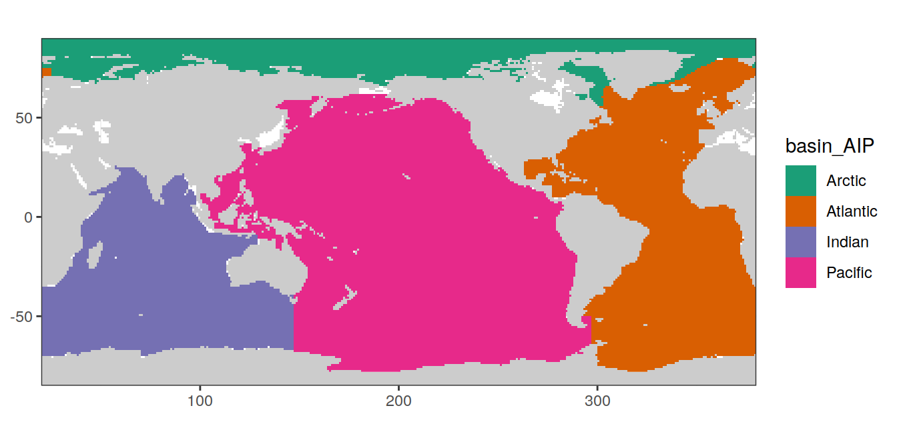
# plot basin_AIP map
map +
geom_raster(data = basinmask_01_excl_Japan,
aes(lon, lat, fill = basin_AIP)) +
scale_fill_brewer(palette = "Dark2")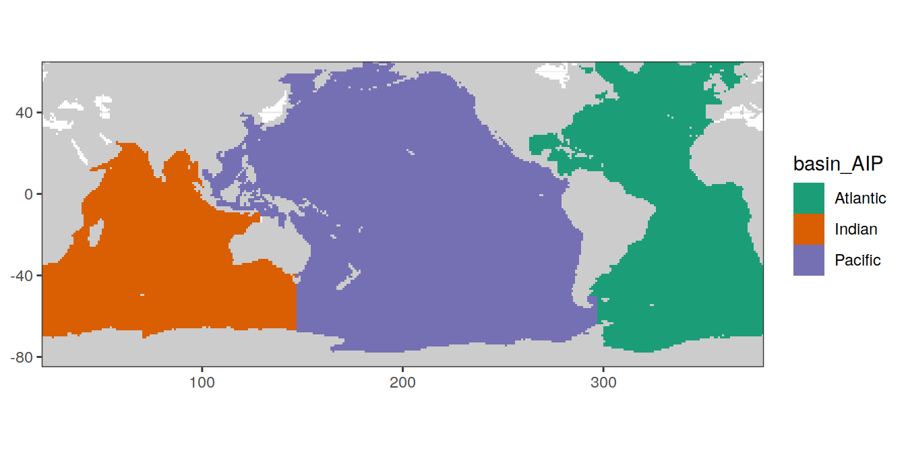
| Version | Author | Date |
|---|---|---|
| 26838f8 | jens-daniel-mueller | 2022-10-24 |
# generate base map, which is further used throughout the project
ggplot() +
geom_raster(data = landseamask,
aes(lon, lat, fill = region)) +
coord_quickmap(expand = 0) +
scale_fill_brewer(palette = "Paired") +
theme(axis.title = element_blank())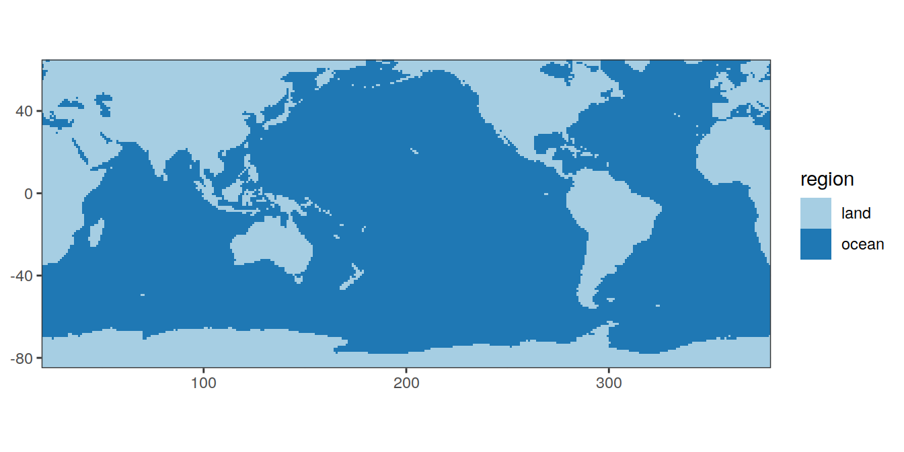
For the MLR fitting, ocean basins are further split up, as plotted below.
# basinmask_01 <- basinmask_01 %>%
# select(-region)
# 4 basins incl arctic
# basinmask_04 <- basinmask_01 %>%
# mutate(basin = basin_AIP) %>%
# mutate(MLR_basins = "4")
# 1 basins
basinmask_01 <- basinmask_01 %>%
# filter(basin_AIP != "Arctic") %>%
mutate(basin = "global",
MLR_basins = "1")
# 2 basins
basinmask_2 <- basinmask_01 %>%
mutate(basin = if_else(basin_AIP == "Atlantic",
"Atlantic",
"Indo-Pacific"),
MLR_basins = "2")
# 5 basins
basinmask_5 <- basinmask_01 %>%
mutate(
basin = case_when(
basin_AIP == "Atlantic" & lat > params_global$lat_equator ~ "N_Atlantic",
basin_AIP == "Atlantic" & lat < params_global$lat_equator ~ "S_Atlantic",
basin_AIP == "Pacific" & lat > params_global$lat_equator ~ "N_Pacific",
basin_AIP == "Pacific" & lat < params_global$lat_equator ~ "S_Pacific",
basin_AIP == "Indian" ~ "Indian"
)
) %>%
mutate(MLR_basins = "5")
# SO_2 basin separate
basinmask_SO_2 <- basinmask_01 %>%
mutate(
basin = if_else(basin_AIP == "Atlantic",
"Atlantic",
"Indo-Pacific"),
basin = if_else(
lat < params_global$lat_min_SO, "SO", basin)
) %>%
mutate(MLR_basins = "SO_2")
# SO_5 basin separate
basinmask_SO_5 <- basinmask_01 %>%
mutate(
basin = case_when(
basin_AIP == "Atlantic" & lat > 35 ~ "N_Atlantic",
basin_AIP == "Atlantic" & lat < 35 & lat >= params_global$lat_min_SO ~ "Atlantic",
basin_AIP == "Atlantic" & lat < params_global$lat_min_SO ~ "S_Atlantic",
basin_AIP == "Pacific" & lat > 35 ~ "N_Pacific",
basin_AIP == "Pacific" & lat < 35 & lat >= params_global$lat_min_SO ~ "Pacific",
basin_AIP == "Pacific" & lat < params_global$lat_min_SO ~ "S_Pacific",
basin_AIP == "Indian" & lat >= params_global$lat_min_SO ~ "Indian",
basin_AIP == "Indian" & lat < params_global$lat_min_SO ~ "S_Indian"
)) %>%
mutate(MLR_basins = "SO_5")
# SO basin separate, with others being AIP
basinmask_SO_AIP <- basinmask_01 %>%
mutate(
basin = if_else(
lat < params_global$lat_min_SO, "SO", basin_AIP)
) %>%
mutate(MLR_basins = "SO_AIP")
# 3 basins
basinmask_AIP <- basinmask_01 %>%
mutate(
basin = basin_AIP) %>%
mutate(MLR_basins = "AIP")
# join basin masks into one file
basinmask_all <- bind_rows(
# basinmask_04,
basinmask_01,
basinmask_2,
basinmask_5,
basinmask_SO_2,
basinmask_SO_5,
basinmask_SO_AIP,
basinmask_AIP
)for (i_MLR_basins in unique(basinmask_all$MLR_basins)) {
# i_MLR_basins <- unique(basinmask_all$MLR_basins)[6]
print(
map +
geom_raster(
data = basinmask_all %>% filter(MLR_basins == i_MLR_basins),
aes(lon, lat, fill = basin)
) +
scale_fill_brewer(palette = "Dark2") +
labs(title = paste("MLR basin label:", i_MLR_basins))
)
}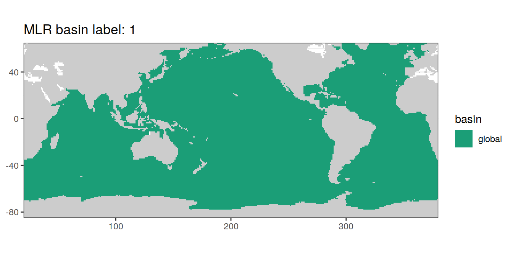
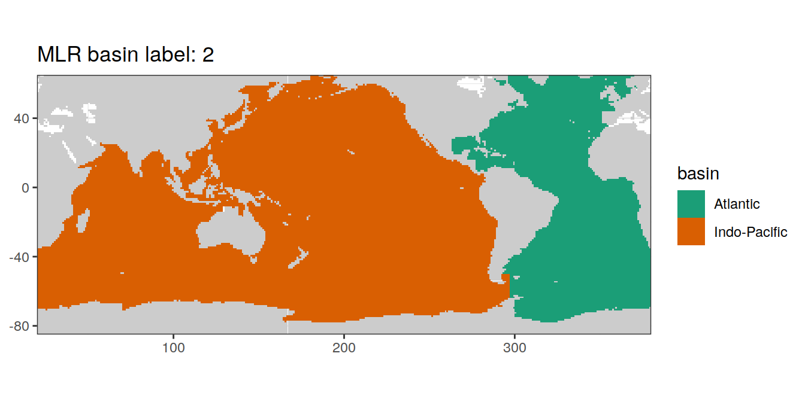
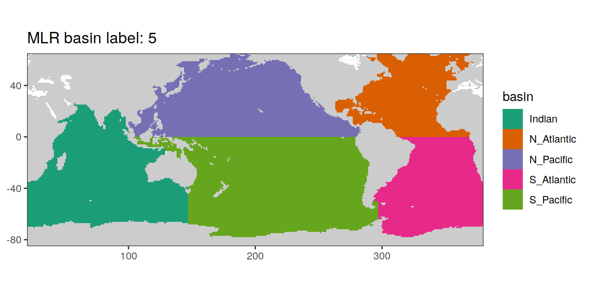
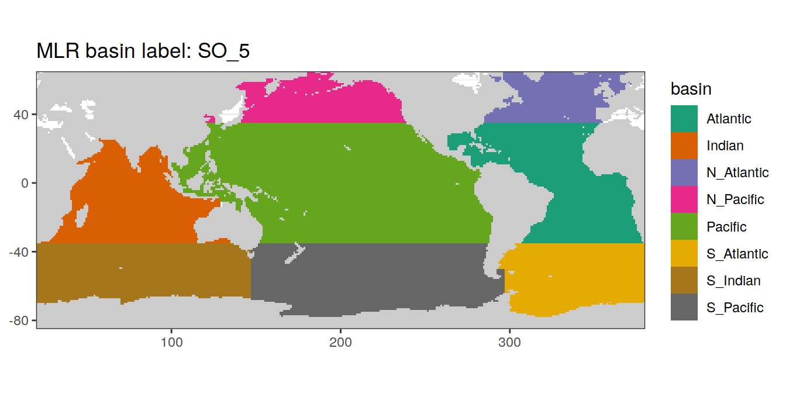
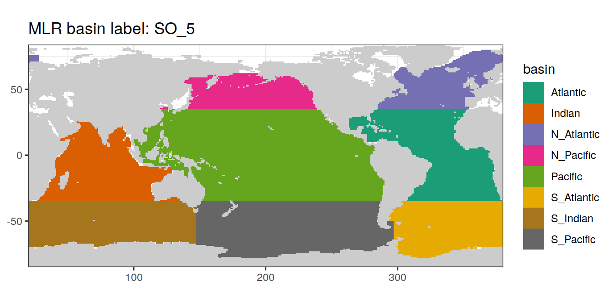
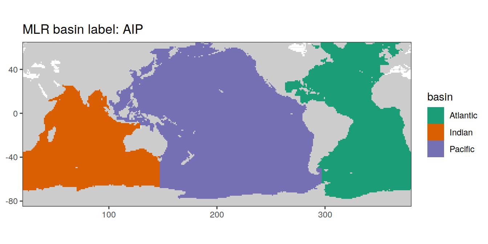
To plot sections from the North Atlantic south to the Southern Ocean, around Antarctica and back North across the Pacific Ocean, corresponding coordinates were subsetted from the basin mask and distances between coordinate grid points calculated.
section <- basinmask_01 %>%
select(lon, lat)
# subset individual section parts
Atl_NS <- section %>%
filter(
lon == params_global$lon_Atl_section,
# lat <= params_global$lat_section_N,
lat >= params_global$lat_section_S
) %>%
arrange(-lat)
Atl_SO <- section %>%
filter(lon > params_global$lon_Atl_section,
lat == params_global$lat_section_S) %>%
arrange(lon)
Pac_SO <- section %>%
filter(lon < params_global$lon_Pac_section,
lat == params_global$lat_section_S) %>%
arrange(lon)
Pac_SN <- section %>%
filter(
lon == params_global$lon_Pac_section,
# lat <= params_global$lat_section_N,
lat >= params_global$lat_section_S
) %>%
arrange(lat)
# join individual section parts
section_global_coordinates <- bind_rows(Atl_NS,
Atl_SO,
Pac_SO,
Pac_SN)
# convert to regular lon coordinates for distance calculation
section_global_coordinates <- section_global_coordinates %>%
mutate(lon_180 = if_else(lon > 180, lon - 360, lon))
# calculate distance along section
section_global_coordinates <- section_global_coordinates %>%
mutate(dist_int = distGeo(cbind(lon_180, lat)) / 1e6) %>%
mutate(dist = cumsum(dist_int))
section_global_coordinates <- section_global_coordinates %>%
select(lon, lat, dist) %>%
drop_na()
rm(Atl_NS, Atl_SO, Pac_SN, Pac_SO, section)map +
geom_point(data = section_global_coordinates,
aes(lon, lat, col = dist)) +
scale_colour_viridis_b(name = "Distance (Mm)")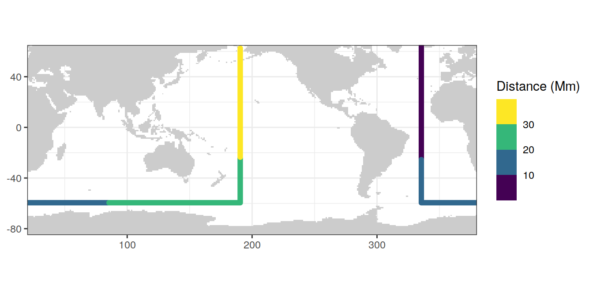
| Version | Author | Date |
|---|---|---|
| 1c60d4c | jens-daniel-mueller | 2022-08-26 |
section <- basinmask_01 %>%
select(lon, lat)
# subset individual section parts
Atl_NS <- section %>%
filter(
lon >= params_global$lon_Atl_section - 5.5,
lon <= params_global$lon_Atl_section + 4.5,
# lat <= params_global$lat_section_N,
lat >= params_global$lat_section_S
) %>%
arrange(-lat)
Atl_SO <- section %>%
filter(lon > params_global$lon_Atl_section,
lat >= params_global$lat_section_S - 5.5,
lat <= params_global$lat_section_S + 4.5) %>%
arrange(lon)
Pac_SO <- section %>%
filter(lon < params_global$lon_Pac_section,
lat >= params_global$lat_section_S - 5.5,
lat <= params_global$lat_section_S + 4.5) %>%
arrange(lon)
Pac_SN <- section %>%
filter(
lon >= params_global$lon_Pac_section - 5.5,
lon <= params_global$lon_Pac_section + 4.5,
# lat <= params_global$lat_section_N,
lat >= params_global$lat_section_S
) %>%
arrange(lat)
# join individual section parts
section_global_coordinates_band <-
bind_rows(Atl_NS %>% mutate(band = "Atlantic"),
Atl_SO %>% mutate(band = "Southern"),
Pac_SO %>% mutate(band = "Southern"),
Pac_SN %>% mutate(band = "Pacific"))
section_global_coordinates_band <-
full_join(section_global_coordinates_band,
section_global_coordinates)
rm(Atl_NS, Atl_SO, Pac_SN, Pac_SO, section)map +
geom_point(data = section_global_coordinates_band,
aes(lon, lat, fill=band), alpha = 0.1, shape=21) +
geom_point(data = section_global_coordinates,
aes(lon, lat, col = dist)) +
scale_colour_viridis_b(name = "Distance (Mm)")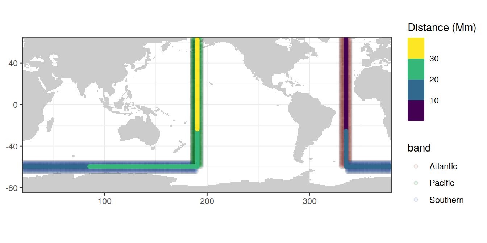
| Version | Author | Date |
|---|---|---|
| 1c60d4c | jens-daniel-mueller | 2022-08-26 |
section <- basinmask_01 %>%
select(lon, lat, basin_AIP)
# subset individual section parts
Atl_NS <- section %>%
filter(
basin_AIP == "Atlantic",
# lat <= params_global$lat_section_N,
lat >= params_global$lat_section_S
) %>%
arrange(-lat)
Atl_NS <- full_join(Atl_NS,
section_global_coordinates %>%
filter(lon == params_global$lon_Atl_section))
Atl_NS <- Atl_NS %>%
select(-basin_AIP) %>%
mutate(band = "Atlantic")
SO <- basinmask_SO_AIP %>%
filter((lon > params_global$lon_Atl_section |
lon < params_global$lon_Pac_section) &
basin == "SO",
lat <= params_global$lat_section_S + 4.5,
lat >= params_global$lat_section_S - 5.5)
SO <- left_join(
SO,
section_global_coordinates %>%
filter(lat == params_global$lat_section_S)
)
SO <- SO %>%
select(-c(basin_AIP:MLR_basins)) %>%
mutate(band = "Southern")
Pac_SN <- section %>%
filter(
basin_AIP == "Pacific",
# lat <= params_global$lat_section_N,
lat >= params_global$lat_section_S
) %>%
arrange(lat)
Pac_SN <- full_join(Pac_SN,
section_global_coordinates %>%
filter(lon == params_global$lon_Pac_section))
Pac_SN <- Pac_SN %>%
select(-basin_AIP) %>%
mutate(band = "Pacific")
# join individual section parts
section_global_coordinates_basin <-
bind_rows(Atl_NS,
SO,
Pac_SN)
rm(Atl_NS, SO, Pac_SN, section)map +
geom_point(data = section_global_coordinates_basin,
aes(lon, lat, fill=band), alpha = 0.1, shape=21) +
geom_point(data = section_global_coordinates,
aes(lon, lat, col = dist)) +
scale_colour_viridis_b(name = "Distance (Mm)")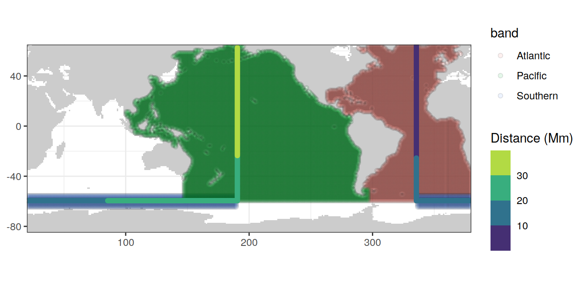
# prepare section basin files
section_global_coordinates_basin <-
section_global_coordinates_basin %>%
mutate(dist = 1,
band = case_when(band == "Southern" ~ "Southern\nOcean",
TRUE ~ band)) %>%
pivot_wider(names_from = band,
values_from = dist)
section_global_coordinates_basin_raster <-
rast(section_global_coordinates_basin,
crs = "+proj=longlat")
center <- -160
boundary <- center + 180
target_crs <- paste0("+proj=robin +over +lon_0=", center)
section_global_coordinates_basin_raster <-
project(section_global_coordinates_basin_raster, target_crs, method = "near")
section_global_coordinates_basin_tibble <-
section_global_coordinates_basin_raster %>%
as.data.frame(xy = TRUE, na.rm = FALSE) %>%
as_tibble() %>%
rename(lon = x, lat = y) %>%
pivot_longer(
cols = -c("lon", "lat"),
names_to = "band",
values_to = "coverage"
) %>%
drop_na() %>%
mutate(band = as.character(band))
# prepare section file
section_global_coordinates_raster <-
rast(section_global_coordinates,
crs = "+proj=longlat")
section_global_coordinates_raster <-
project(section_global_coordinates_raster, target_crs, method = "near")
section_global_coordinates_tibble <-
section_global_coordinates_raster %>%
as.data.frame(xy = TRUE, na.rm = FALSE) %>%
as_tibble() %>%
rename(lon = x, lat = y) %>%
drop_na()
section_global_coordinates_tibble <-
section_global_coordinates_tibble %>%
group_by(dist) %>%
summarise(lon = mean(lon),
lat = mean(lat)) %>%
ungroup() %>%
mutate(dist = cut(dist, seq(0,40,10),
labels = c("0-10", "10-20", "20-30", "30-40")))
library(rnaturalearth)
worldmap <- ne_countries(scale = 'small',
type = 'map_units',
returnclass = 'sf')
worldmap <- worldmap %>% st_break_antimeridian(lon_0 = center)
worldmap_trans <- st_transform(worldmap, crs = target_crs)
# ggplot() +
# geom_sf(data = worldmap_trans)
coastline <- ne_coastline(scale = 'small', returnclass = "sf")
coastline <- st_break_antimeridian(coastline, lon_0 = 200)
coastline_trans <- st_transform(coastline, crs = target_crs)
# ggplot() +
# geom_sf(data = worldmap_trans, fill = "grey", col="grey") +
# geom_sf(data = coastline_trans)
bbox <- st_bbox(c(xmin = -180, xmax = 180, ymax = 65, ymin = -78), crs = st_crs(4326))
bbox <- st_as_sfc(bbox)
bbox_trans <- st_break_antimeridian(bbox, lon_0 = center)
bbox_graticules <- st_graticule(
x = bbox_trans,
crs = st_crs(bbox_trans),
datum = st_crs(bbox_trans),
lon = c(20, 20.001),
lat = c(-78,65),
ndiscr = 1e3,
margin = 0.001
)
bbox_graticules_trans <- st_transform(bbox_graticules, crs = target_crs)
rm(worldmap, coastline, bbox, bbox_trans, bbox_graticules)
# ggplot() +
# geom_sf(data = worldmap_trans, fill = "grey", col="grey") +
# geom_sf(data = coastline_trans) +
# geom_sf(data = bbox_graticules_trans)
lat_lim <- ext(bbox_graticules_trans)[c(3,4)]*1.002
lon_lim <- ext(bbox_graticules_trans)[c(1,2)]*1.005
global_section_map <-
ggplot() +
geom_raster(data = section_global_coordinates_basin_tibble %>%
filter(band == "Atlantic"),
aes(
x = lon,
y = lat,
fill = band,
alpha = 0.3
)) +
geom_raster(data = section_global_coordinates_basin_tibble %>%
filter(band == "Southern\nOcean"),
aes(
x = lon,
y = lat,
fill = band,
alpha = 0.3
)) +
geom_raster(data = section_global_coordinates_basin_tibble %>%
filter(band == "Pacific"),
aes(
x = lon,
y = lat,
fill = band,
alpha = 0.3
)) +
scale_fill_mediumcontrast(name = "Averaging\nareas") +
# scale_fill_grey() +
geom_path(
data = section_global_coordinates_tibble %>%
filter(lon > 0),
aes(x = lon,
y = lat,
color = dist),
linewidth = 1
) +
geom_path(
data = section_global_coordinates_tibble %>%
filter(lon < 0),
aes(x = lon,
y = lat,
color = dist),
linewidth = 1
) +
scale_color_grey(start = 0.7,end = 0, name = "Distance\nalong\nsection\n(1000 km)") +
geom_sf(data = worldmap_trans, fill = "grey90", col = "grey90") +
geom_sf(data = coastline_trans, linewidth = 0.3) +
geom_sf(data = bbox_graticules_trans, linewidth = 0.3) +
coord_sf(
crs = target_crs,
ylim = lat_lim,
xlim = lon_lim,
expand = FALSE
) +
guides(fill = guide_legend(override.aes = list(alpha = 0.3)),
alpha = "none") +
theme(
axis.title = element_blank(),
axis.text = element_blank(),
axis.ticks = element_blank(),
panel.border = element_rect(colour = "transparent"),
strip.background = element_blank(),
panel.grid.major = element_blank()
)
global_section_map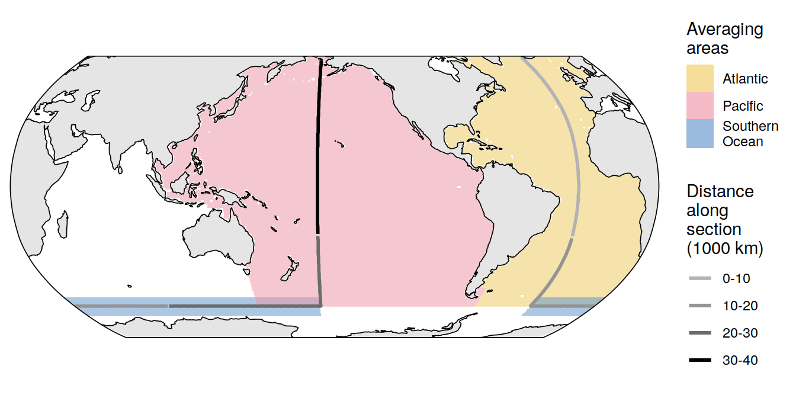
ggsave(
path = "/UP_home/jenmueller/Projects/emlr_cant/observations/emlr_obs_analysis/output/publication",
filename = "FigS_global_section_map.png",
height = 4,
width = 8,
dpi = 600
)
# section_global_coordinates_basin %>%
# filter(!is.na(dist)) %>%
# count(lon, lat) %>%
# filter(n != 1)
#
# section_global_coordinates %>%
# count(lon, lat) %>%
# filter(n != 1)# land sea mask
landseamask %>%
write_csv(paste(path_files,
"land_sea_mask_WOA18.csv",
sep = ""))
# basin mask
basinmask_all %>%
write_csv(paste(path_files,
"basin_mask_WOA18.csv",
sep = ""))
# basin mask excluding Sea of Japan
basinmask_01_excl_Japan %>%
write_csv(paste(path_files,
"basin_mask_WOA18_excl_Japan.csv",
sep = ""))
# global section
section_global_coordinates %>%
write_csv(paste(path_files,
"section_global_coordinates.csv",
sep = ""))
# global section band
section_global_coordinates_band %>%
write_csv(paste(path_files,
"section_global_coordinates_band.csv",
sep = ""))
# global section band
section_global_coordinates_basin %>%
write_csv(paste(path_files,
"section_global_coordinates_basin.csv",
sep = ""))
# base map ggplot
map %>%
write_rds(paste(path_files,
"map_landmask_WOA18.rds",
sep = ""))
sessionInfo()R version 4.2.2 (2022-10-31)
Platform: x86_64-pc-linux-gnu (64-bit)
Running under: openSUSE Leap 15.4
Matrix products: default
BLAS: /usr/local/R-4.2.2/lib64/R/lib/libRblas.so
LAPACK: /usr/local/R-4.2.2/lib64/R/lib/libRlapack.so
locale:
[1] LC_CTYPE=en_US.UTF-8 LC_NUMERIC=C
[3] LC_TIME=en_US.UTF-8 LC_COLLATE=en_US.UTF-8
[5] LC_MONETARY=en_US.UTF-8 LC_MESSAGES=en_US.UTF-8
[7] LC_PAPER=en_US.UTF-8 LC_NAME=C
[9] LC_ADDRESS=C LC_TELEPHONE=C
[11] LC_MEASUREMENT=en_US.UTF-8 LC_IDENTIFICATION=C
attached base packages:
[1] stats graphics grDevices utils datasets methods base
other attached packages:
[1] rnaturalearth_0.1.0 terra_1.6-41 khroma_1.9.0
[4] stars_0.6-0 sf_1.0-9 abind_1.4-5
[7] patchwork_1.1.2 geosphere_1.5-18 oce_1.7-10
[10] gsw_1.1-1 reticulate_1.26 tidync_0.3.0
[13] forcats_0.5.2 stringr_1.4.1 dplyr_1.0.10
[16] purrr_0.3.5 readr_2.1.3 tidyr_1.2.1
[19] tibble_3.1.8 ggplot2_3.4.0 tidyverse_1.3.2
[22] workflowr_1.7.0
loaded via a namespace (and not attached):
[1] googledrive_2.0.0 colorspace_2.0-3 ellipsis_0.3.2
[4] class_7.3-20 rprojroot_2.0.3 fs_1.5.2
[7] rstudioapi_0.14 proxy_0.4-27 farver_2.1.1
[10] bit64_4.0.5 fansi_1.0.3 lubridate_1.9.0
[13] xml2_1.3.3 codetools_0.2-18 ncdf4_1.19
[16] cachem_1.0.6 knitr_1.41 jsonlite_1.8.3
[19] broom_1.0.1 dbplyr_2.2.1 png_0.1-8
[22] compiler_4.2.2 httr_1.4.4 backports_1.4.1
[25] assertthat_0.2.1 Matrix_1.5-3 fastmap_1.1.0
[28] gargle_1.2.1 cli_3.4.1 later_1.3.0
[31] htmltools_0.5.3 tools_4.2.2 rnaturalearthdata_0.1.0
[34] gtable_0.3.1 glue_1.6.2 Rcpp_1.0.9
[37] cellranger_1.1.0 jquerylib_0.1.4 RNetCDF_2.6-1
[40] vctrs_0.5.1 lwgeom_0.2-10 xfun_0.35
[43] ps_1.7.2 rvest_1.0.3 timechange_0.1.1
[46] lifecycle_1.0.3 ncmeta_0.3.5 googlesheets4_1.0.1
[49] getPass_0.2-2 scales_1.2.1 vroom_1.6.0
[52] ragg_1.2.4 hms_1.1.2 promises_1.2.0.1
[55] parallel_4.2.2 RColorBrewer_1.1-3 yaml_2.3.6
[58] sass_0.4.4 stringi_1.7.8 highr_0.9
[61] e1071_1.7-12 systemfonts_1.0.4 rlang_1.0.6
[64] pkgconfig_2.0.3 evaluate_0.18 lattice_0.20-45
[67] labeling_0.4.2 bit_4.0.5 processx_3.8.0
[70] tidyselect_1.2.0 magrittr_2.0.3 R6_2.5.1
[73] generics_0.1.3 DBI_1.1.3 pillar_1.8.1
[76] haven_2.5.1 whisker_0.4 withr_2.5.0
[79] units_0.8-0 sp_1.5-1 modelr_0.1.10
[82] crayon_1.5.2 KernSmooth_2.23-20 utf8_1.2.2
[85] tzdb_0.3.0 rmarkdown_2.18 grid_4.2.2
[88] readxl_1.4.1 callr_3.7.3 git2r_0.30.1
[91] reprex_2.0.2 digest_0.6.30 classInt_0.4-8
[94] httpuv_1.6.6 textshaping_0.3.6 munsell_0.5.0
[97] viridisLite_0.4.1 bslib_0.4.1